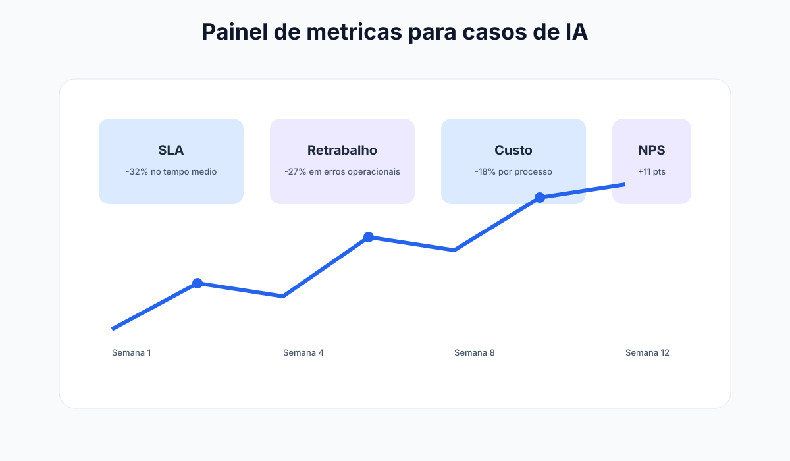

Método robusto
Hipótese, desenho e inferência alinhados.
Módulo 7 | Pós-graduação
Este módulo eleva o curso para profundidade acadêmica de pós-graduação. O foco não é apenas usar IA, mas justificar decisões com rigor metodológico, inferência causal e validação crítica de evidências.
Por que esta imagem? O módulo exige leitura crítica e método científico, e a imagem posiciona esse tom acadêmico logo no início.
Hipótese, desenho e inferência alinhados.
Resultados com validade e rastreabilidade.
Evite confundir correlação com causalidade.



Em contextos organizacionais, decisões apoiadas por IA frequentemente confundem correlação com causalidade. Uma postura de pós-graduação exige explicitar o tipo de evidência disponível, as limitações do desenho de pesquisa e a robustez das conclusões.
Ênfase em mensuração, replicabilidade e testes estatísticos para avaliar impacto de automações e modelos preditivos.
Integra métodos quantitativos e qualitativos, priorizando utilidade prática e valor para decisão executiva.
Examina efeitos distributivos, vieses e assimetrias de poder gerados por sistemas algorítmicos em organizações.
Sistema didático do módulo
Resumo
A força da decisão está na qualidade do método: hipótese clara, métrica adequada e limite explicitado.
Exemplo real
Uma proposta consistente explica não apenas o ganho esperado, mas também incertezas, vieses e riscos residuais.
Prompt pronto
Os prompts desta seção ajudam a estruturar desenho causal e converter análise técnica em decisão executiva.
Atenção
Resultados sem grupo de comparação podem levar a decisões frágeis e investimentos superestimados.
| Desenho | Quando usar | Vantagem | Limitação |
|---|---|---|---|
| A/B test organizacional | Dois fluxos comparáveis no mesmo período | Boa inferência causal | Nem sempre viável por restrições operacionais |
| Diferenças-em-diferenças | Antes/depois com grupo de controle | Controla tendências temporais comuns | Exige premissa de tendências paralelas |
| Séries temporais interrompidas | Intervenção em ponto conhecido do tempo | Boa leitura de ruptura de tendência | Sensível a eventos externos simultâneos |
| Estudo de caso múltiplo | Comparação entre unidades organizacionais | Riqueza contextual e insights de implementação | Menor generalização estatística |
Use este roteiro para transformar um piloto de IA em evidência defensável para diretoria e comitê de governança.
Prompt acadêmico para plano de pesquisa
Atue como orientador de pesquisa em administração e IA. Construa um protocolo metodológico para avaliar o impacto da intervenção [descreva a intervenção] no processo [nome do processo]. Estruture em: - Pergunta de pesquisa e hipótese - Desenho metodológico recomendado - Variáveis dependentes e independentes - Estratégia de coleta e qualidade dos dados - Riscos de viés e mitigação - Critérios para decisão de escala
Resultados robustos em uma unidade podem não replicar em outra. Documente explicitamente condições contextuais de sucesso.
Otimizar um indicador isolado pode piorar desempenho global. Use cesta de métricas balanceada para evitar miopia gerencial.
Times podem adaptar comportamento para "agradar" o indicador. Audite qualidade real e não apenas números reportados.
Avalie lock-in tecnológico e portabilidade de dados/modelos antes de escalar para processos críticos.
Trilha de profundidade acadêmica para avaliação rigorosa de soluções de IA em contextos administrativos.
Paradigmas de pesquisa, validade e construção de evidência em gestão.
Carga: 4h
A/B test, DiD, séries temporais e análise de robustez.
Carga: 5h
Construção de protocolo completo para um caso real da organização.
Carga: 5h
Defesa crítica de método, resultados esperados e limitações.
Carga: 4h
Aplicacao pratica para transformar teoria de Modulo 7 em ganho operacional mensuravel.
Mapeie o fluxo atual de protocolo de analise causal e identifique gargalos de tempo, custo e retrabalho.
Evidencia: mapa AS-IS com 3 gargalos priorizados.
Desenhe um piloto de 2 semanas para metodos avancados e inferencia, com escopo controlado e checkpoints diarios.
Evidencia: plano de execucao com dono, prazo e criterio de parada.
Defina baseline e metas para robustez metodologica, comparando antes vs depois com o mesmo periodo.
Evidencia: painel simples com 3 KPIs e tendencia semanal.
Implemente regras de revisao humana, classificacao de dados e trilha de auditoria das decisoes.
Evidencia: checklist de risco com responsaveis e frequencia de revisao.
Planeje extensao para um segundo processo mantendo qualidade, custo sob controle e aprendizagem da equipe.
Evidencia: roadmap 30-60-90 dias com marco de escala.
Prompts curados para acelerar analise, decisao e implantacao com foco em Modulo 7.
Prompt 1: Diagnostico executivo
Atue como consultor de metodos avancados e inferencia. Faça um diagnostico rapido do processo [protocolo de analise causal] com 5 gargalos, impacto estimado e prioridade de ataque.
Prompt 2: Plano 30-60-90
Monte um plano 30-60-90 dias para implementar IA em [protocolo de analise causal] incluindo objetivos, entregas por fase, donos e riscos.
Prompt 3: KPIs e baseline
Defina um modelo de medicao para [robustez metodologica] com baseline, meta trimestral, formula e frequencia de acompanhamento.
Prompt 4: Governanca minima
Crie uma politica minima de uso de IA para este contexto com regras de dados, revisao humana, aprovacao e auditoria.
Prompt 5: Escala com controle
Proponha como escalar o piloto para outra area sem perder qualidade, informando criterios de readiness e plano de capacitacao.
Use estes prompts para estruturar análises mais profundas, entender causas reais e evitar correlações enganosas.
Prompt: Protocolo para análise causal (causa vs correlação)
Observei correlação entre [variável A] e [variável B]. É causação ou apenas correlação? CONTEXTO DO DADO: - Período de observação: [X meses/anos] - Número de observações: [X milhões/milhares?] - Confiabilidade da coleta de dados: [alta/média/baixa - por quê?] - Há valores faltantes ou outliers? [sim/não - quantos %?] ANÁLISE DE CORRELAÇÃO: - Correlação observada: [X %] - Significância estatística: [p-value, confidence interval?] - Relação está crescendo ou estável? [qual tendência?] POSSÍVEIS EXPLICAÇÕES: 1. Causação direta: [A causa B diretamente? 2. Causação reversa: [B causa A?] 3. Variável confundidora: [existe outra variável C que causa A E B?] 4. Coincidência temporal: [ambas crescem em tempo similar mas independente?] 5. Autocorrelação: [ambas seguem uma tendência do tempo?] TEST TO VALIDATE: - Teste de exclusão: [remover A, B continua?] - Teste temporal: [A precede B sempre?] - Teste de mecanismo: [defenda logicamente o mecanismo causal] CONCLUSÃO: É causação ou correlação enganosa? Confiança em %?
Prompt: Estimar impacto REAL de uma intervenção (antes vs depois controlado)
Implementamos [intervenção com IA] e vimos melhoria de [X%]. Quanto dessa melhoria é real vs por sorte? DADOS DO ANTES: - Métrica baseline: [valor] - Desvio padrão (variabilidade): [valor] - Estabilidade (aumentando/diminuindo/flat?): [descrever] DADOS DO DEPOIS: - Métrica pós-intervenção: [valor] - Período de medição: [semanas/meses] - Manteve a tendência anterior ou quebrou? [descrever] ANÁLISE DO IMPACTO REAL: 1. Ganho observado: [X -Y = Z%] 2. Ganho esperado por tendência: [se intervenção não existisse, qual seria o valor?] 3. Ganho real atribuível à intervenção: [Z - tendência = impacto real] 4. Significância estatística: [esse ganho é real ou pode ser sorte?] 5. Persistência: [3 meses depois, mantém o ganho?] CENÁRIOS: - Melhor caso: [qual seria impacto se mantiver ganho?] - Pior caso: [qual seria se regredir à tendência?] - Mais realista: [qual estimativa com conservadorismo?] RECOMENDAÇÃO: Ganho é real? Investimento se justifica? Escalar?
Prompt: Dossiê executivo com evidência de impacto causal
Estruture um dossiê executivo com rigor causal (não apenas correlação): SEÇÃO 1 - CONTEXTO (por quê fizemos): - Problema original: [qual era o desafio?] - Por que era importante resolver: [impacto negativo estimado] - Objetivo da intervenção: [o que queríamos mudar?] SEÇÃO 2 - MÉTODO (como sabemos que funcionou): - Desenho da avaliação: [antes-depois? Com grupo controle? Quasi-experimental?] - Período: [quanto tempo testamos?] - Amostra: [quantos casos? Representativos?] - Variáveis de controle: [quais fatores externos controlamos?] SEÇÃO 3 - RESULTADOS (o que encontramos): - Impacto estimado em %: [X%] - Intervalo de confiança: [entre Y% e Z%] - Significância estatística: [p <0.05? A que nível de certeza?] - Comparação: [Vs benchmark, vs meta, vs setor?] SEÇÃO 4 - LIMITAÇÕES (o que pode estar errado): 1. [Limitação 1 e como afeta interpretação] 2. [Limitação 2 e como afeta interpretação] 3. [Limitação 3 e como afeta interpretação] SEÇÃO 5 - CONCLUSÃO (qual é nossa melhor estimativa): - Impacto causal estimado: [X% com confiança Y%] - Validade externa: [replicável em cenários similares?] - Próximos passos: [qual é a evidência que falta?] RECOMENDAÇÃO PARA BANCA: Ganho real? Suficiente para escalar? Que cuidados?